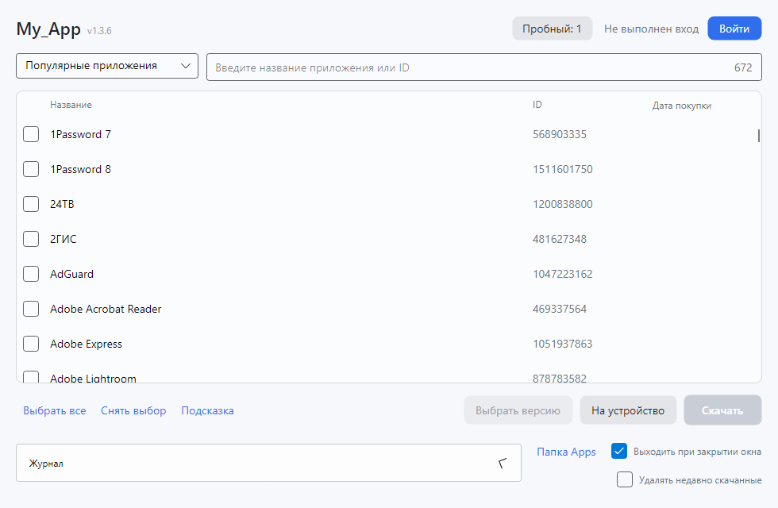
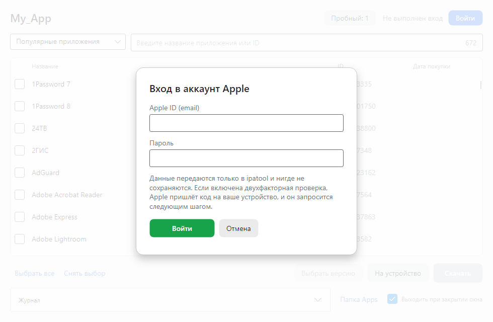
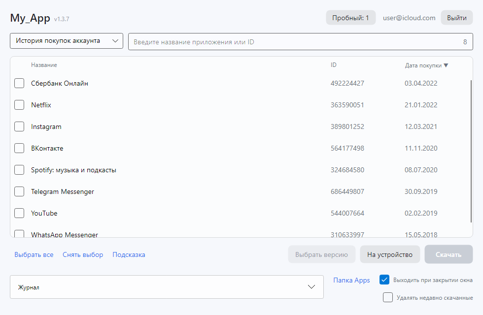
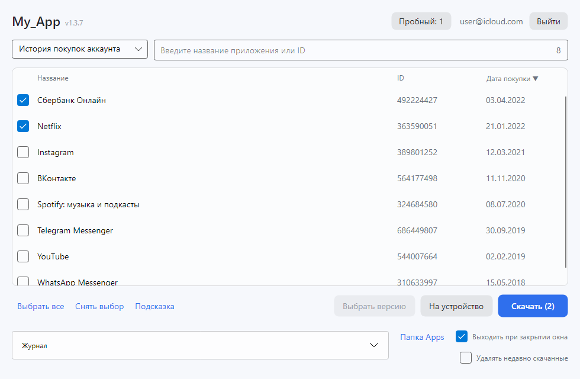
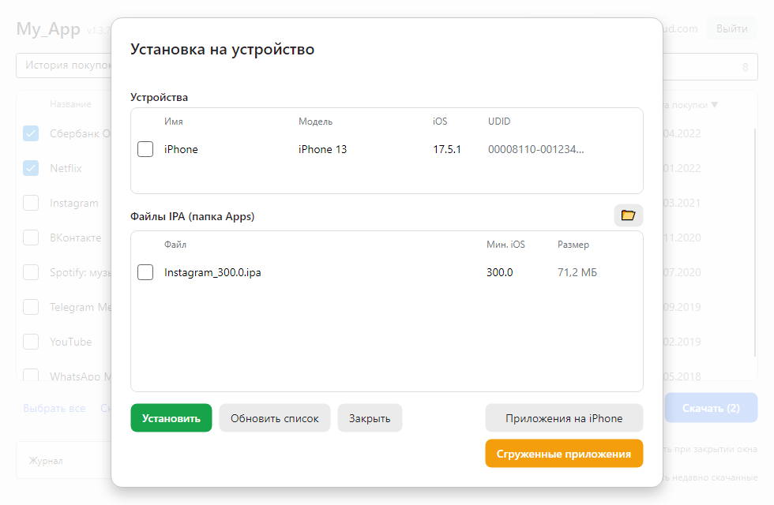
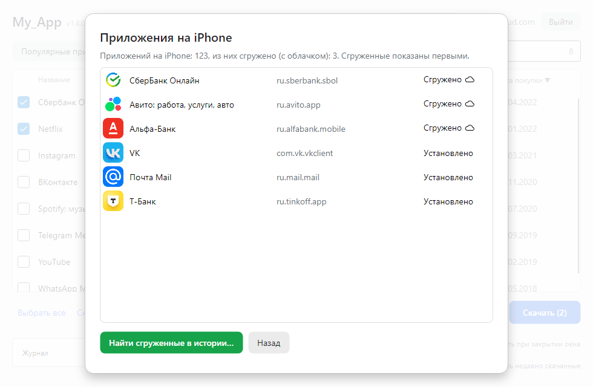
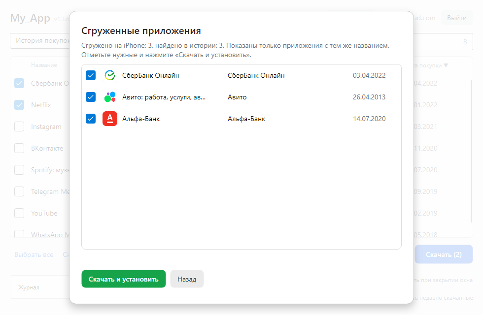
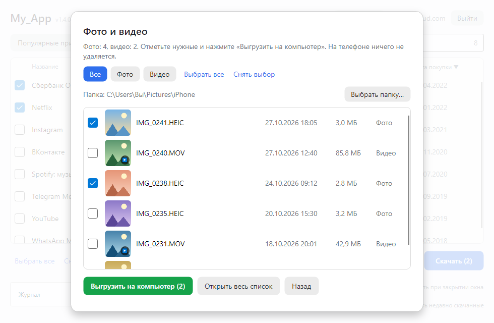
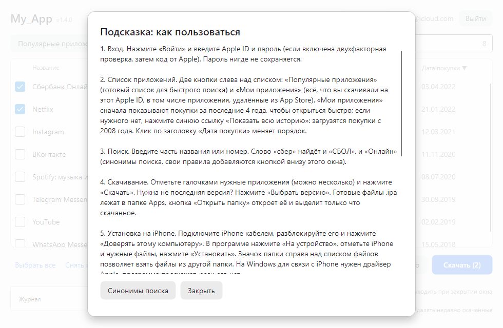

Инструкция по шагам
Шесть шагов от запуска до приложения на iPhone. Красные рамки на скриншотах показывают, куда нажимать. Версия программы написана серым справа от названия в верхнем углу окна. Если что-то забыли, нажмите «Подсказка» под списком (см. внизу страницы).
Важно. Скачать можно только те приложения, которые уже были загружены на ваш Apple ID, в том числе те, которые потом убрали из App Store в вашей стране. Они лежат в списке «История покупок аккаунта» (шаг 3). Приложение, которого никогда не было в вашем аккаунте, программа не скачает.
1 Установите и откройте My_App
Скачайте программу на главной странице и запустите. На Windows запустите установщик, на Mac откройте файл .dmg и перетащите My_App в «Программы» (как открыть программу без подписи Apple, написано в помощи).
Нажмите «Войти» в правом верхнем углу окна.

Нажмите «Войти»2 Войдите в свой Apple ID
Введите Apple ID (e-mail) и пароль, нажмите «Войти». Если включена двухфакторная проверка, Apple пришлёт код на ваше устройство: введите его на следующем шаге. Пароль нигде не сохраняется и передаётся только Apple.

Затем «Войти»3 Нажмите «Мои приложения»
В левом верхнем углу две кнопки: «Популярные приложения» и «Мои приложения». Нажмите «Мои приложения»: программа загрузит приложения, которые вы скачивали на этот Apple ID за последние 4 года, с названием, номером и датой покупки.
Нужное приложение старше? Когда список загрузится, под ним появится синяя ссылка «Показать всю историю»: нажмите её, и программа догрузит покупки с самого начала. Если покупок много, это займёт минуту.
Именно эти приложения можно скачать. Список «Популярные приложения» нужен только для быстрого поиска по названию.

Нажмите «Мои приложения»Нужное приложение можно найти строкой поиска справа: по названию или номеру.
4 Отметьте приложения и нажмите «Скачать»
Поставьте галочки у нужных приложений (можно несколько сразу) и нажмите «Скачать». Нужна не последняя версия? Нажмите «Выбрать версию». Готовые файлы .ipa лягут в папку Apps, её открывает кнопка «Папка Apps».

Затем «Скачать»5 Поставьте приложение на iPhone
Подключите iPhone кабелем, разблокируйте и нажмите «Доверять этому компьютеру». В My_App нажмите «На устройство». В окне отметьте свой iPhone и нужный файл и нажмите «Установить». На Windows для связи с iPhone нужен драйвер Apple: программа сама подскажет, если его нет.
Файлы берутся из папки Apps. Если нужные файлы лежат в другом месте, нажмите маленькую кнопку с папкой справа над списком файлов и выберите папку.

Отметьте iPhone и файл, затем «Установить» Другая папка Ещё: сгруженные, фото и видео (шаги 6 и 7)6 Если приложение пропало с телефона (сгружено)
Бывает, что приложение «сгружено»: на iPhone остался значок с облачком, а самого приложения нет (например, его убрали из App Store). My_App умеет находить такие приложения и ставить их обратно.
В окне «На устройство» нажмите «Приложения на iPhone»: откроется весь список приложений телефона со значками, сгруженные показаны первыми.

Сгруженные (облачко)Чтобы вернуть их, нажмите оранжевую кнопку «Сгруженные приложения» (она под кнопкой «Приложения на iPhone»). Программа найдёт их в истории покупок того же Apple ID, под которым вы вошли. Отметьте нужные галочками и нажмите «Скачать и установить»: приложения скачиваются и ставятся на iPhone по одному, а файл после установки удаляется из папки Apps.

Отметьте нужные Затем «Скачать и установить»Если какое-то приложение не нашлось, скорее всего, оно куплено с другого Apple ID (на iPhone бывают приложения с разных аккаунтов). Войдите в тот аккаунт и повторите. Либо в вашей истории оно называется иначе: тогда найдите его вручную в списке «История покупок».
7 Фото и видео с iPhone на компьютер
В окне «На устройство» отметьте свой iPhone и нажмите синюю кнопку «Фото и видео». Телефон должен быть разблокирован. Программа прочитает список и покажет миниатюры, чтобы вы видели, что выгружаете.
Отметьте нужные снимки и ролики галочками (или нажмите «Выбрать все») и нажмите «Выгрузить на компьютер». Фильтры «Все», «Фото» и «Видео» помогают найти нужное. Двойной щелчок по снимку или ролику открывает его для просмотра во весь экран. Кнопка «Открыть весь список» показывает всё сеткой крупных миниатюр, и на экране помещается больше.

Затем «Выгрузить на компьютер» Другая папкаФайлы по умолчанию попадают в папку «Изображения\iPhone», другую папку выбирает кнопка «Выбрать папку…». На телефоне ничего не удаляется и не меняется.
Подсказка в программе
Под списком приложений есть кнопка «Подсказка»: короткая инструкция прямо в программе. В её окне также кнопка «Синонимы поиска»: свои правила, чтобы по слову «сбер» находились и «СБОЛ», и «Онлайн».

Что-то не получилось?
Ответы на частые вопросы собраны на странице «Помощь». Если не нашли свой случай, напишите в поддержку: адрес поддержки, приложите скриншот.